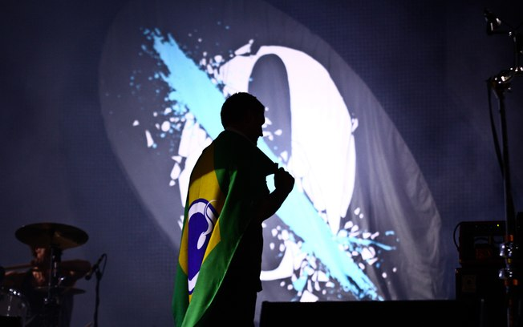

Queens of the Stone Age
Uma das maiores representantes do rock mundial, Queens of the Stone Age confirma duas apresentações no Brasil este ano: no dia 25 de setembro, a banda estará no Espaço das Américas, em São Paulo, em um show que faz parte da plataforma Live Music Rocks, e dois dias depois, em 27 de setembro, o show chega a Porto Alegre, no Pepsi On Stage. A banda formada pelo vocalista Josh Homme, que também toca guitarra, Troy Van Leeuwen (guitarra, backing vocals, teclados, lap steel), Dean Fertita (teclados, guitarra, backing vocals), Michael Shuman (baixo, backing vocals, percussão) e Jon Theodore (bateria, percussão) incluem pela primeira vez o Brasil em sua turnê mundial. A banda até já esteve no país outras três vezes, mas sempre em festivais, como o Rock in Rio, em 2001, o SWU, em 2010 e o Lollapalooza, de 2013. A turnê traz canções do último disco da banda ...Like Clockwork, que foi muito bem analisado pelo crítica musical que classificou o trabalho como um registro de grande instropecção e complexidade, que dão o tom mais aguardado pelos fãs dos reis do stoner rock. Sobre a turnê, Josh Homme ainda categoriza: “A única pressão que acontece entre nós é termos a certeza de não será igual ao que já fizemos”. Mais informações sobre os shows no Brasil serão divulgadas em breve. Biografia
Antes do surgimento do QotSA, uma banda californiana chamada Kyuss saiu do anonimato para tornar-se um ícone cult da cena heavy metal americana, chegando a figurar como o principal expoente do sub-gênero stoner rock. Muitos talentos fizeram parte do Kyuss durante sua existência, entre eles Josh Homme, Nick Oliveri, John Garcia e Alfredo Hernandez. Mas, em 1995, apesar da popularidade, o Kyuss se dissolveu e o líder e guitarrista Josh Homme mudou-se para Seattle, onde ingressou no Screaming Trees como segundo guitarrista durante a turnê do álbum Dust, de 1996. Neste período, Josh participou do festival Lollapalooza em sua última edição com o Trees, tocando ao lado de bandas como Soundgarden e Metallica. Em 1997, com a queda nas atividades do Screaming Trees, Josh encontrou tempo suficiente para trabalhar em um projeto próprio. Foi o início da série Desert Sessions, que permitiu a ele se expressar com mais liberdade e, em seguida, montar o Queens of the Stone Age. Em parceria com o baterista Alfredo Hernandez, Josh trabalhou o som da banda que à primeira impressão relembra o Kyuss, mas, na verdade, possui uma sonoridade mais variada. O primeiro álbum – com o nome do grupo – foi financiado pela própria banda e acabou lançado em setembro de 1998. Com uma repercussão impressionante, o álbum ajudou a fixar o nome do Queens of the Stone Age como uma das grandes promessas do rock. A banda esteve em turnê por quase dois anos. Com o fim, em 2000, do Screaming Trees, Josh passou a se dedicar exclusivamente ao QotSA, e começou a trabalhar no seu segundo álbum, Rated R. O disco, que contou com dois bateristas: Gene Troutman e Nicky Lucero, e apesar de singles candidatos a hit, como “Feel Good Hit of the Summer” e “The Lost Art of Keeping a Secret”, não foi sucesso de vendagem. O Queens of the Stone Age embarcou em uma turnê de dois anos pelo mundo, incluindo uma o show no Rock in Rio em janeiro de 2001, onde Oliveri se apresentou completamente nu. No ano seguinte o terceiro disco já era preparado. Mark Lanegan entrou definitivamente como segundo vocalista, enquanto a bateria passou a contar com Dave Grohl, ex-Nirvana e líder do Foo Fighters. Nesse mesmo ano, Troy Van Leeuwen entrou como segundo guitarrista. Com o disco pronto, o QotSA embarcou em mais uma turnê. Songs for the Deaf foi lançado em agosto e o sucesso entre público e crítica foi quase unânime. Em 2002, depois de Dave Grohl retornar ao Foo Fighters, Joey Castillo assume as baquetas. No final de 2003, Josh demitiu Nick Oliveri, alegando estar cansado do comportamento irresponsável do companheiro. O grupo lançou, então, o EP Stone Age Complications tentando abafar a turbulência, enquanto Josh reorganizava a banda para gravar o quarto disco. Lullabies to Paralyze trouxe uma proposta diferenciada. Embora muito da ferocidade da banda tenha sido suprimida, foram trazidas melodias mais sombrias e perturbadoramente pesadas. Após alguns shows que contaram com Billy Gibbons, do ZZ Top, Mark deixa a banda. Josh Homme, Alain Johannes (multi-instrumentista), Troy Van Leeuwen, Natasha Shneider e Joey Castillo saíram, então, em turnê pelo mundo. Neste período, alguns momentos marcantes fizeram parte da história da banda: a gravação do MTV Akustik Session, em Berlim, a reunião com John Garcia (ex-vocalista do Kyuss) em um dos shows da banda cantando canções do antigo grupo e a gravação do primeiro CD/DVD ao vivo Over The Years And Through The Woods, em Londres. Após o fim das turnês de divulgação de Lullabies, Josh Homme e Brody Dalle tiveram uma filha e durante um tempo não se sabia o que a banda faria. Em 2006, o QotSA gravou seu quinto álbum, novamente com Chris Goss. Era Vulgaris foi lançado em junho de 2007. Michael Shuman, do Wires On Fire, e Dean Fertita, do The Racounters, passaram a integrar o QotSA e Billy Gibbons, do ZZ Top, e Mark Lanegan também estavam de volta. Em março de 2013 durante o Lollapalooza Brasil, a banda apresentou seu novo baterista, Jon Theodore, ex-The Mars Volta, além da música “My God is the Sun”. Vindo a ser o novo single da banda, “My God is the Sun” fez parte do álbum Like Clockwork, que foi lançado em junho de 2013 e contou com a volta de Dave Grohl, Nick Oliveri e Alain Johannes.
Membros
Josh Homme – Vocal e Guitarra (1997-presente)
Troy Van Leeuwen – Guitarra, backing vocals, teclados, lap steel (2002-presente)
Dean Fertita – Teclados, guitarra, backing vocals (2007-presente)
Michael Shuman - Baixo, backing vocals, percussão (2007-presente)
Jon Theodore – Bateria, percussão (2013-presente)
Discografia
√Ålbuns de estúdio
1998 – Queens Of The Stone Age
2000 – Rated R
2002 – Songs For The Deaf
2005 – Lullabies To Paralyze
2007 – Era Vulgaris
2013 – Like Clockwork
Para comprar ingressos clique aqui!


Copywrong by vinikatunaric@gmail.com